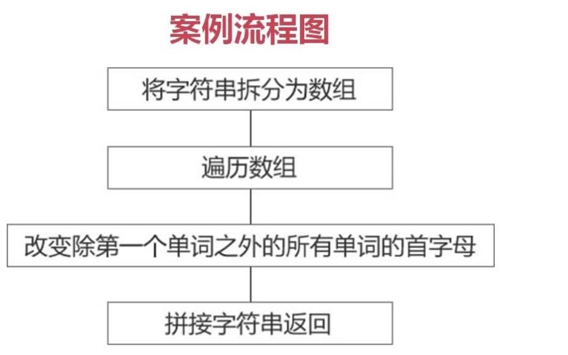

字符串检索方法
1.想要获取字符串中某一字符
stringObject.charAt(index) 返回stringObject中得index位置的字符
stringObject.charCodeAt(index) 返回stringObject中得index位置的字符的字符编码。
2.想要获取字符串中某一字符的位置(与数组中用法一样)
stringObject.indexof(“ 你想要的字符串”)； 返回字符串的位置 没有就返回-1
stringObject.lastindexof(“ 你想要的字符串”)；从后往前搜索 返回字符串的位置
1 <script type="text/javascript">
2 var str="hello world";
3 //1.想要获取字符串中某一字符：
4 console.log(str.charAt(7));//显示索引7在的位置字符；
5 console.log(str.charCodeAt(4));//显示索引在4位子的字符在ASCII码表上的编码号
6 //2.想要获取字符串中某一字符的位置：
7 var email="marry.mail@soho.com";
8 console.log(email.indexOf("o"));//查找字符串中o第一次出现的位置的索引值；
9 console.log(email.lastIndexOf("."));//查找字符串中"."最后出现一次所在的位置的索引值；
10 </script>3-8 String（slice()-substring()和substr()）
1想要截取字符串
1.slice(start,end)截取
1.最后一个参数省略时，截取到末尾。
2，参数为负数时，其值为字符串长度+该负数。
3，不包含最后参数本身（end）。
1 <script type="text/javascript">
2 var str="hello world";
3 //截取orl
4 console.log(str.slice(7,10));
5 console.log(str.slice(1));
6 console.log(str.slice(-7,-2));//str.slice(4,9)
7 </script>2 substring()截取
说明：语法及功能同slice()完全一样。
区别在于：
1.当参数为负数时，自动将参数转换为0.
2.substring()会将较小的数作为开始位置，将较大的数作为结束位置。
1 <script type="text/javascript">
2 var str="hello world";
3 console.log(str.substring(-7,5));//(0,5)
4 console.log(str.substring(2,-5));//(0,2)
5 </script>3.substr()截取;
语法：
stringObject.substr(start.len)
功能：
截取子字符串。
参数说明：
1.start:必需，指定子字符串的开始位置。
2.len:可选，表示截取的字符总数，省略时截取至字符串的末尾。
3.当start为负数时，会将传入的负值与字符串的长度相加。
4.当len为负数时，返回空字符串。
1 <script>
2 var str="hello world";
3 console.log(str.substr(6,3)); //等价于str.substring(6,9)
4 console.log(str.substr(-5,4));//(6,4)
5 console.log(str.substr(3,-4));// 空截取个数为负数或0 则返回空字符串
6 </script> 获取字符串中的特定的某一段方法综合
1 <script type="text/javascript">
2 //获取扩展名
3 var url="http://baidu.com/index.txt"
4 function getFileFormat(url){
5 //获取.在URL中出现的位置
6 var pos=url.lastIndexOf(".");
7 return url.substr(pos);
8 }
9 var formatName=getFileFormat(url);
10 var picFormat=getFileFormat("123456789.jpg");
11 console.log(formatName);
12 console.log(picFormat);
13 </script>3-20 String（split和replace）
1.split()
stringObj.split(separator)
把一个字符串分割成字符串数组 返回值：Array 说明：必需，分隔符.
1 <script type="text/javascript">
2 var str="welcome-to-beijing";
3 //使用split将str转化为数组
4 var arr=str.split("-");
5 console.log(arr);//["welcome","to","beijing"]
6 var date="2016/05/05";
7 var dateArr=date.split("");
8 console.log(dateArr);//["2016","05","05"]
9 </script>2 replace（）
stringObj.replace(regexp/substr, replacement)
在字符串中用一些字符替换另一些字符，或替换一个与正则表达式匹配的子串。
返回值：string
参数：regexp：必需。规定子字符串或要替换的模式的RegExp对象。 replacement：必需，一个字符串值.
1 <script>
2 //替换 replace
3 var tel="010-62971268,010-64899373,010-34565767";
4 //newTel被替换之后的字符串
5 var newTel=tel.replace(','," ");
6 console.log(newTel);
7 </script>3-26 String（toUpperCase和toLowerCase）
掌握字符串方法的其他方法：
1.toUpperCase():
语法： stringObject.toUpperCase() 功能： 把字符串转换为大写
2.toLowerCase():
语法： stringObject.toLowerCase() 功能： 把字符串转化为小写
3.将字符串border-left-color转换成borderLeftColor

1 <!DOCTYPE html>
2 <html lang="en">
3 <head>
4 <meta charset="UTF-8">
5 <title>Document</title>
6 </head>
7 <body>
8 <script type="text/javascript">
9 function cameback(str){
10 //通过-这个风格符将str拆分成数组
11 var arr=str.split("-"),newStr=arr[0];
12 //console.log(arr);//["border","left","color"]
13 //第0个位置的单词不需要处理 所以I=1开始
14 for(var i=1,len=arr.length;i<len;i++){
15 var world=arr[i];
16 //将每一个单词的首字母转换为大写
17 newStr+=world.charAt(0).toUpperCase()+world.substr(1);
18 //console.log(newStr);//Left Color L C
19 //newStr=borderLeftColor
20 }
21 return newStr;
22 }
23 var comelFormat=cameback("border-left-color");
24 console.log(comelFormat);
25 </script>
26 </body>
27 </html>